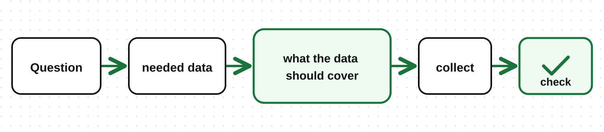

In the previous lesson, you learned how to turn a problem into a clear question. The next step is to get the data that can answer that question.
Data collection is gathering the data needed to answer analytical questions.
In this lesson, we will continue with the rice sales example, measuring rice sales in kilograms (kg):
“How much did rice sales drop in August compared to July, and which branch had the biggest drop?”
Start from the question and list the data you need. In our example, each sales record needs:
| Data | Why it is needed |
|---|---|
| Sale date | To separate July sales from August sales |
| Branch name | To compare branches |
| Product name | To separate rice from other products |
| Amount of rice sold, in kg | To calculate sales and measure the change |
Only collect what the question needs. Customer names and phone numbers are not needed for this comparison.
Be clear about the time period, places, and product the data should cover:
Time period: all of July and all of August, in the same year
Places: all branches being studied
Product: rice sold in those branches
August data alone cannot answer a question that compares two months. Data from one branch cannot show which branch had the biggest drop.
This data may come from the business sales records. Ask the person who manages the system to export the two months of data with the columns you defined.
If each branch keeps separate records, collect the same time period from every branch.
Write down where the data came from and the date it was exported. This makes it easier to check later if a question comes up.
Before cleaning the data, check:
Are all needed columns included?
Are both months and all branches included?
Is rice measured in kg everywhere, or did some branches use bags or sacks?
For example, if August data from one branch is missing, you should not treat that as zero sales. That could make the branch look like it had the biggest drop when the real problem is missing data.
If some data is missing, ask for it again from the source. If it cannot be found, explain what is missing and how it limits the answer.

Once the needed data is collected, the next step is cleaning it.